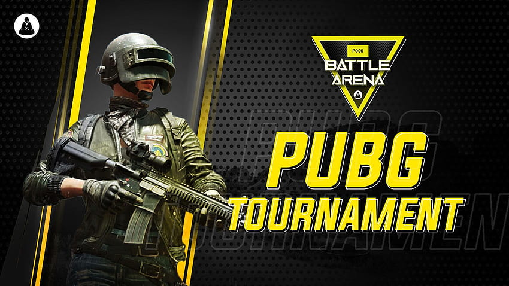
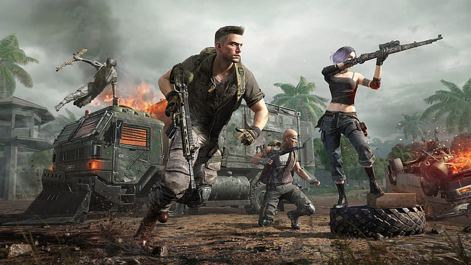
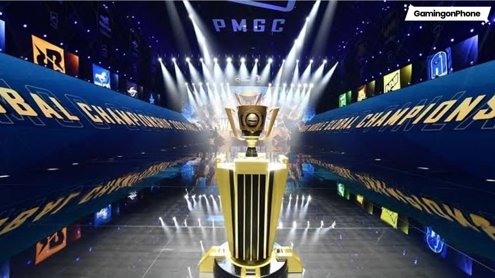

Welcome to the heart of PUBG esports — where strategy meets pure adrenaline. In the world of competitive Battlegrounds, every second counts and every decision can be the difference between victory and elimination. PUBG tournaments bring together the most skilled squads and solo players from around the world to battle for glory, rank, and massive prizes.

PUBG esports is built on teamwork, sharp aim, and perfect decision-making. Teams rotate, scout, and fight their way through intense circles while keeping their focus sharp and communication perfect. One wrong move, one missed call, or one risky push can change everything.
From Erangel’s forests to Miramar’s deserts, every PUBG map tests players in unique ways. Professional teams study these environments, master positioning, and practice tactics for every possible situation. This is what makes PUBG competitions so thrilling to watch — anything can happen at any moment.

PUBG stands out because no two matches are ever the same. The circle shifts randomly. Loot spawns differently. Opponents can be anywhere. It is a true test of adaptability, skill, and mental strength.
Top esports players practice daily, reviewing strategies, improving gunplay, mastering recoil control, and learning advanced rotations. Behind every pro team is countless hours of training and preparation. When they step into the arena, every match becomes a masterpiece of coordination and instinct.
Whether you dream of becoming a professional PUBG player or simply love watching intense battlegrounds, the esports community welcomes you. Follow tournaments, support your favorite teams, and learn new tactics to improve your own game.
PUBG esports is more than competition — it’s a global community of fighters, survivors, and champions. Gear up, drop in, and chase the thrill of victory.